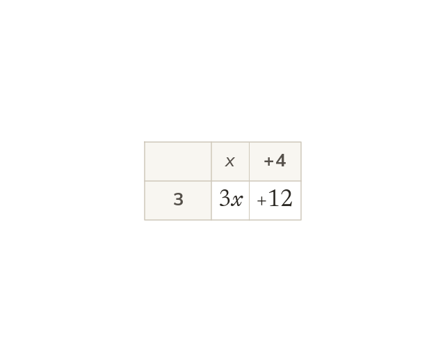

The distributive property
Expanding multiplies every term inside the bracket by the term outside. 3(x + 4) = 3x + 12: the 3 reaches the x and the 4.
Expanding a bracket multiplies every term inside by the term outside - not just the first one. 3(x + 4) = 3x + 12: the 3 reaches both the x and the 4.